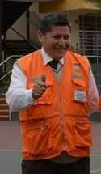
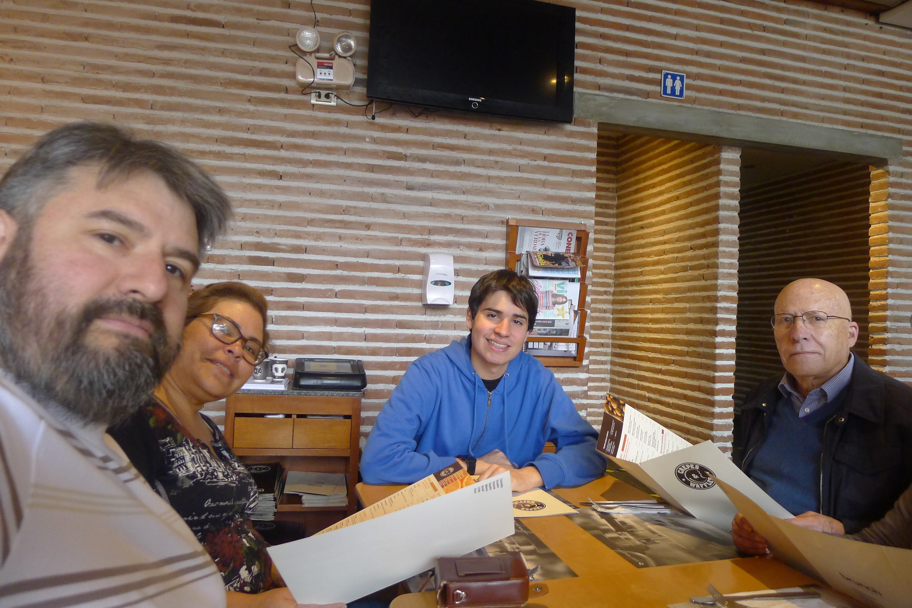
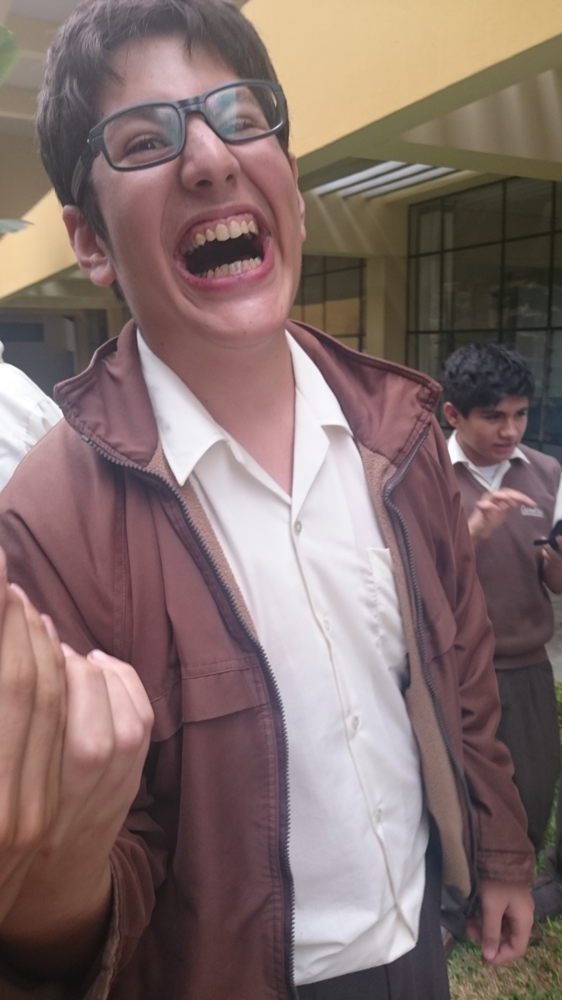

Juan Antonio Gallarday Bueno
Soy Juan Gallarday. Estudio Ingeniería Industrial en la UTEC, me gustan los videojuegos y las series en Netflix.
Galeria de Fotos
Present mis foteins que contienen galerias




Mis Comidas
mis comidas favoritas sobre todo lo demas son las siguientes:>
- Makis
- Lasaña
- Pizza
- Pure de papas
- Una Buena Hamburguesa
Segmento de Cultura
Hoy en dia las personas se encuentran muy a los bordes del espectro politico. Es por eso, que quiero compartir este video que expresa como nos sentimos los del medio de vez en cuando.
Amigos
| Nombre | Carrera | Edad | Pagina |
|---|---|---|---|
| Ernesto Deloayza | Ciencias de la Computacion (Ingenieria Industrial) | 17 | Ernesto |
| Milagros Dimas | Ingenieria Industrial | 18 | Mila |
| Billy Flores | Ingenieria Industrial | 18 | Billardo |
| Hector Retamozo | Ingenieria Ambiental | 20 | Hectorr |
| Mia Towsend | Bioingenieria | 18 | Pagina Mia |
Informacion de Contacto
telf. +51 957 439 574, correo: juan.gallarday@utec.edu.pe